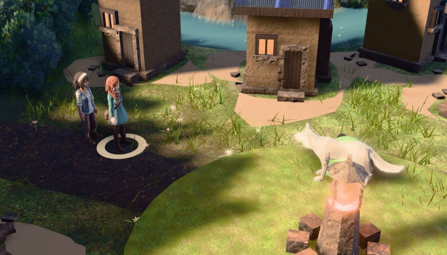
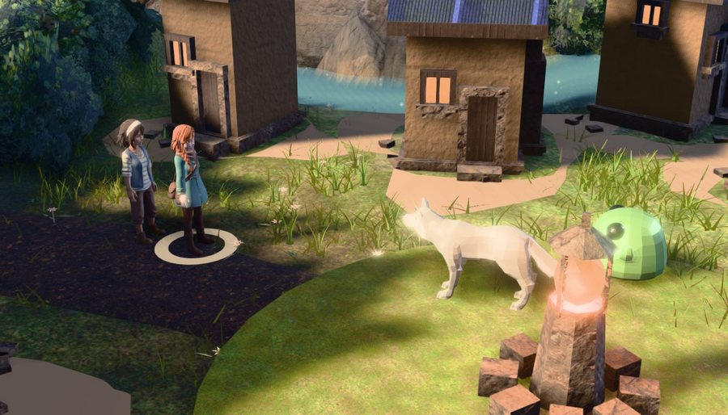
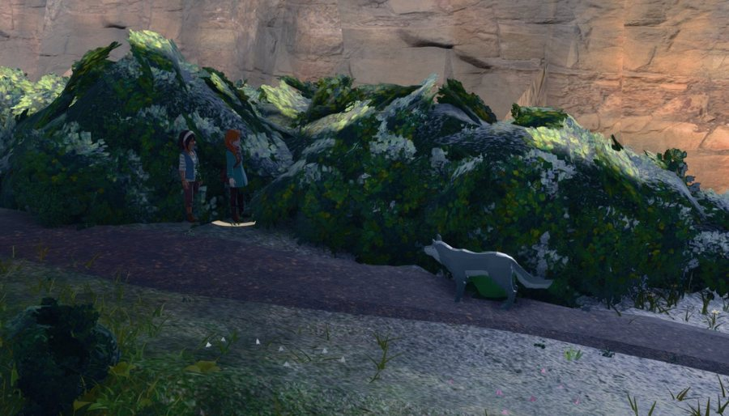
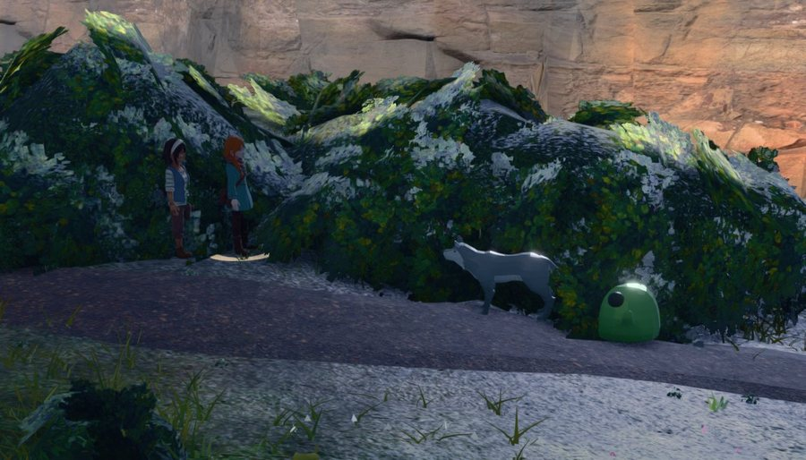
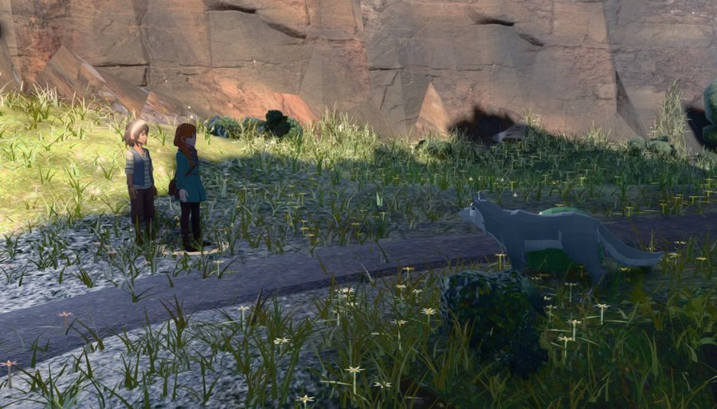
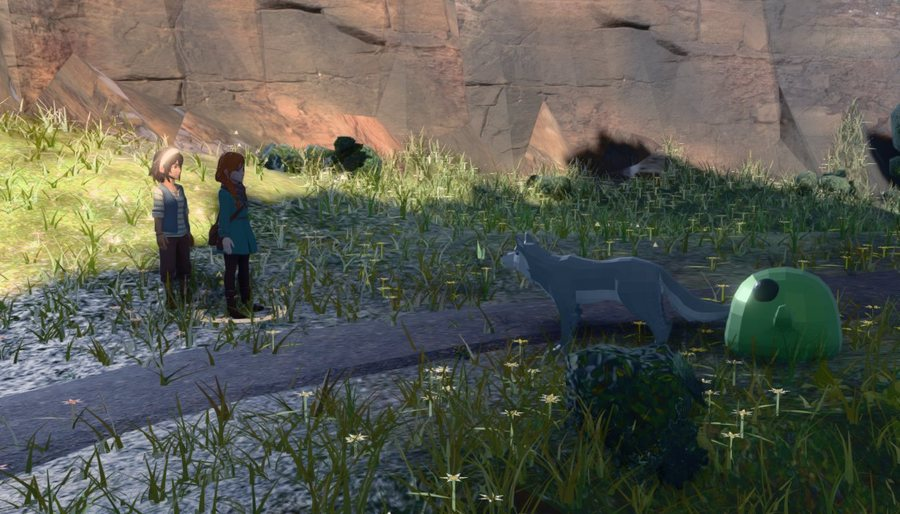
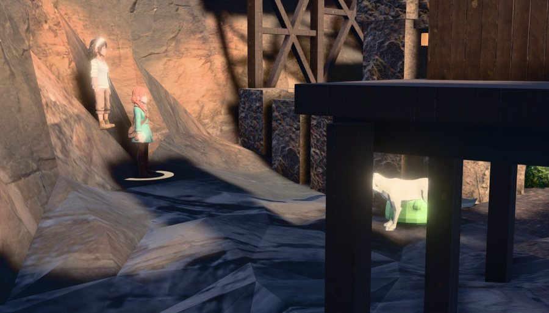
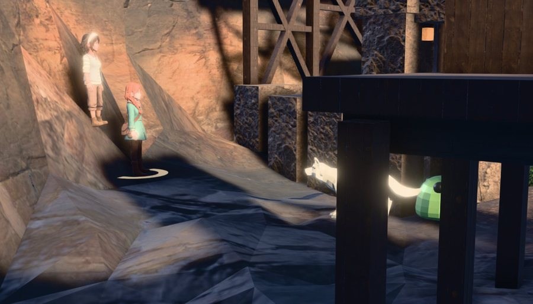
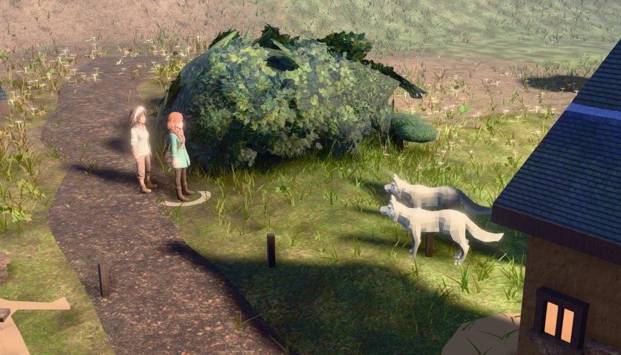
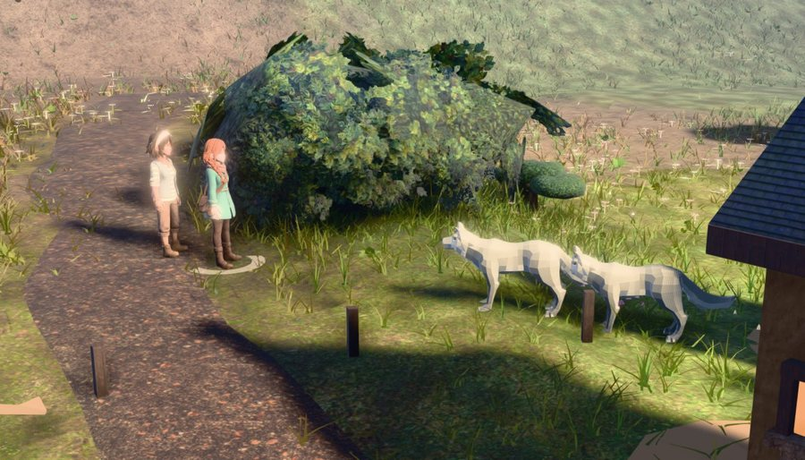

2026-08-09 · instrument tools/battle_overlap_lib.mjs + battle_decide --mode=overlap ·
62-site census, three arms, one build · ?bfoe=<rake>&bfoedz=<depth> is the A/B
The party-overlap lane found this in its own residuals and left it on purpose. slotsFor gives a foe
ax = foeX + |i − (n−1)/2| · foeChevron: the absolute value makes the chevron a V at three
foes and inert at two — both foes take the same across-axis coordinate and differ only in depth. Measured here, on the
shipped build: the second foe is ≥25% eaten by the first at 44 of 62 sites and ≥50% at 28, with the pair's
screen-x centres 0.009 frame widths apart. Every “2.00 of 2 foes in frame” receipt in this arc was true and hollow.
At two foes the closed form puts both slots at ax = foeX + 0.5·foeChevron and separates them only in
depth (±0.62·foeSpread). decide swings the boom 0.30 rad, so the line ends
17.2° off the view axis and lateral separation is 0.422 m of a 1.428 m line — against a duskpad
that projects 0.32 frame widths wide. Two bodies 0.42 m apart across, one of them two metres long, are one body.
rake = the SIGNED across-axis rank as a multiple of the spread the depth rank uses; depth =
a multiplier on that depth rank. (0, 1) is the shipped closed form character for character. Worst foe per site.
| (rake, depth) | occTeam ≥10/25/50 | occTotal | bodies with no silhouette | foes in frame | Δcx p50 | lateral m p50 | line vs axis | foe hFrac p50 | camDist p50 |
|---|---|---|---|---|---|---|---|---|---|
| (0, 1) — the shipped closed form | 12/11/9 | 12/11/9 | 4 | 24/26 | 0.007 | 0.421 | 17.2° | 0.286 | 11.661 |
(0.25, 1) — drop the Math.abs, keep foeChevron 0.5 | 12/9/6 | 12/9/6 | 4 | 24/26 | 0.048 | 0.766 | 31.3° | 0.287 | 11.748 |
| (0.5, 1) | 9/6/1 | 11/7/1 | 4 | 24/26 | 0.092 | 1.093 | 43.8° | 0.294 | 11.166 |
| (1, 1) — the diagonal: rake AND depth | 2/0/0 | 4/1/0 | 0 | 26/26 | 0.169 | 1.787 | 62.2° | 0.293 | 11.36 |
| (0.7, 0.5) | 10/3/0 | 12/4/0 | 0 | 26/26 | 0.118 | 1.166 | 71.6° | 0.304 | 10.652 |
| (0.7, 0) | 10/0/0 | 13/1/0 | 0 | 26/26 | 0.112 | 0.955 | 72.8° | 0.292 | 10.664 |
| (1, 0) — a flat rank abreast | 0/0/0 | 3/0/0 | 0 | 26/26 | 0.17 | 1.365 | 72.8° | 0.284 | 10.815 |
| (1.4, 0) | 0/0/0 | 2/1/0 | 0 | 26/26 | 0.219 | 1.911 | 72.8° | 0.261 | 11.365 |
| (−1, 0) — the flat rank, other sign | 0/0/0 | 2/1/0 | 0 | 26/26 | 0.173 | 1.365 | 72.8° | 0.269 | 11.474 |
The smallest change the evidence names does not fix it. Literally deleting the Math.abs and keeping
foeChevron's own 0.5 is arm (0.25, 1): 12/9/6 against the control's 12/11/9. 0.36 m of across-axis offset is not a
separation when the near body projects a third of the frame wide.
A flat rank wins the same way it won for the party, and for the same reason. It is perpendicular to
baseYaw, so the swing leaves the line 72.8° off the view axis instead of 17.2°, and
it does not lengthen the line — the across span is the spread the depth rank was already using, so every body moves
1.0 m and staging (a SEARCH over exactly this geometry) is perturbed no harder than the party fix perturbed it. Wider is not
better: at 1.4 the occlusion is already zero and the extra metres only buy a smaller foe (hFrac 0.284 → 0.261). The
opposite sign is no better and costs 0.7 m of boom.
| arm | n | foe occTeam ≥10/25/50 | foe occWorld | foe occTotal | party occTeam | party occWorld | party occTotal | no silhouette | foes in frame | axisOk | Δcx p50 | lateral m | line vs axis | foe hFrac | camDist | ring 0 | stage ms p50 |
|---|---|---|---|---|---|---|---|---|---|---|---|---|---|---|---|---|---|
| BEFORE — the closed form (rake 0, depth 1) | 62 | 52/44/28 | 11/2/1 | 52/44/29 | 3/1/0 | 17/5/2 | 23/6/2 | 4 | 122/124 | 62/62 | 0.009 | 0.422 | 17.2° | 0.277 | 11.975 | 13 | 100 |
| SHIPPED — a flat rank (rake 1, depth 0) | 62 | 2/0/0 | 7/2/1 | 11/2/2 | 4/1/1 | 15/2/0 | 20/5/1 | 0 | 124/124 | 62/62 | 0.165 | 1.365 | 72.8° | 0.273 | 11.158 | 13 | 99 |
+ the second staging eye (?beye2=1, NOT shipped) | 62 | 1/0/0 | 7/2/1 | 11/2/2 | 5/1/1 | 14/2/0 | 21/5/1 | 0 | 124/124 | 62/62 | 0.165 | 1.365 | 72.8° | 0.273 | 11.158 | 13 | 108 |
The foe line: occTeam 52/44/28 → 2/0/0, occTotal 52/44/29 → 11/2/2, foes in frame 122/124 → 124/124, bodies with no silhouette at all 4 → 0 (all four were ONE site, s015, where the before arm rendered no cast silhouette whatever), axisOk 62/62 in every arm. The pair's screen centres go 0.009 → 0.165 frame widths apart. It is close to free: foe height in frame 0.277 → 0.273 (−1.4%), camera distance 11.98 → 11.16 m (the frame gets tighter, because a line abreast is shallower than a line in depth), ring-0 staging unchanged at 13 sites, staging solve p50 100 → 99 ms.
Seven sites changed staging ring (s002 R8→5, s004 R8→5, s007 R5→0, s026 R0→5, s036 R0→5, s046 R5→0, s053 R5→8) — staging is a search over the slot geometry and this lane moved the geometry, so every regression above is a relocation or a new world occluder, never a teammate. s022 is not a new defect: its foe was already 0.89 lost to the world before the change. s038 is the real one and it is looked at below.
Frames are the shipped decide shot at the command step, cast idle phase pinned with stage.qa.pose(),
ORBIT.yaw pinned, ambient motes sat out — nothing between the two arms but the two numbers.








Before, at s012 and s024 and s006, there is one animal on screen with a green wedge stuck to it — it reads as part of the wolf, a saddle or a shadow, not as a creature. After, there is a wolf in profile and a green blob beside it, and nobody would describe that frame as containing one enemy. s038 is the honest cost: the fight is staged under a wooden deck, and the across-axis move slid the wolf behind one of the deck's posts (occWorld 0.04 → 0.47). Even there the frame is more legible as two creatures than the before frame was — but half a wolf is behind a post, and that is a real loss.
The census pair is a duskpad and a reed-nibbler — a two-metre wolf and a small blob. duskpad, duskpad is a
real shipped encounter (encounters.json, forest weight 3) and is the hardest case for any across offset, because both
bodies project the same width. 21 stratified sites, both arms, same build.
| arm | n | foe occTeam ≥10/25/50 | foe occWorld | foe occTotal | no silhouette | foes in frame | axisOk | Δcx p50 | foe hFrac p50 |
|---|---|---|---|---|---|---|---|---|---|
| BEFORE | 21 | 16/13/8 | 6/0/0 | 16/13/7 | 4 | 41/42 | 21/21 | 0.012 | 0.297 |
| AFTER | 21 | 7/0/0 | 4/1/0 | 12/2/0 | 0 | 42/42 | 21/21 | 0.17 | 0.257 |


occTeam ≥25% goes 13 of 21 to ZERO and no foe is ever half-eaten by its twin; 7 sites keep a ≥10% clip, which is what two two-metre bodies 1.43 m apart do to each other's edges. This is where the fix costs something real: two wide bodies abreast have to be framed wider, so foe height in frame falls 0.297 → 0.257 (−13%) at this group, against −1.4% at the census pair. Bodies with no silhouette 4 → 0, foes in frame 41/42 → 42/42, axisOk 21/21.
Before, the two wolves are one animal with a doubled outline and a second head; after, they are two wolves.
The party lane named the cause of its own residual: stageArena validates every slot from the round eye and
decide swings 0.30 rad off it and pushes in. decideEye() in battle_world.js now
reproduces the part a ray cares about — the swing (read off the shot row and partySide()), the pitch offset,
and an aim weighted keepBias from the party slots toward the foe slots — and walks the SAME per-slot jitter
ring, preferring a jitter that clears both eyes and falling back to the round eye's own answer. By construction it cannot lose a
slot, refuse a site or relocate a fight, which is deliberate: relocation is the mechanism that produced every regression this lane
and the party lane have named.
It measures null and it is not free. Against the shipped arm over the full census: 61 of 62 sites identical, foe occWorld unchanged at 7/2/1, party occWorld 15/2/0 → 14/2/0, and the one site it moves is a regression (s049, party occTeam 0.05 → 0.22). Cost: staging solve p50 99 → 108 ms, p95 +66 ms, 8.70 → 9.99 s over the census — +14.9%.
Why it is null is the part worth keeping. The shot solver already has this refusal and has far more room to act on it:
decide carries keepVis and showParty, so every foe and every party body is already in
subjVis() at the real decide pose, and solveShotSafe walks three swings × three boom lifts
looking for one that clears them. A staging-time copy is a second bite at the same apple with a ±1.6-slot jitter instead of
a whole boom ladder — and where the world is genuinely in the way (s038, a fight under a deck) no jitter escapes the post,
so the fallback holds. The form that would have somewhere to go is a REFUSAL that relocates the site, and that is the trade this
arc has already paid for twice. The proxy is honest about itself: it sits a median 1.87 m from the real decide eye
(p95 5.22, max 6.38). Kept, off, as the A/B that proves the above: ?beye2=1 / --beye2=1.
| BEFORE (rake 0, depth 1) | SHIPPED (rake 1, depth 0) | |
|---|---|---|
| staging solve p50 (62 sites) | 100 ms | 99 ms |
| staging solve, census total | 8.80 s | 8.70 s |
decide re-solve p50 (4 sites × 60 reps) | 0.5 ms | 0.5 ms |
| trigger → first frame p50 / max | 575.5 / 614.8 ms | 554.4 / 630.1 ms |
| round resolution (fixed scripted part) | 7833.4 ms | 7829.9 ms |
| camera refusals | 0 | 0 |
| foe height in frame p50 | 0.277 | 0.273 |
| camera distance p50 | 11.98 m | 11.16 m |
| ring-0 staging (“fight where you stand”) | 13 / 62 | 13 / 62 |
Nothing on the turn path moved: the slot geometry is read once, at create(), and the shot solver does the same
arithmetic on the same number of bodies either way.
| site | zone | BEFORE | AFTER | Δcx | lateral m | foe hFrac | ||||||
|---|---|---|---|---|---|---|---|---|---|---|---|---|
| occTeam | occTotal | occTeam | occWorld | occTotal | before | after | before | after | before | after | ||
| s000 | water | 0.779 | 0.792 | 0.016 | 0.052 | 0.057 | 0.001 | 0.1838 | 0.315 | 1.365 | 0.304 | 0.312 |
| s001 | forest | 0.261 | 0.264 | 0.037 | 0.090 | 0.109 | 0.009 | 0.1921 | 0.422 | 1.365 | 0.28 | 0.27 |
| s002 | forest | 0.681 | 0.682 | 0.036 | 0.004 | 0.039 | 0.0171 | 0.1608 | 0.214 | 1.412 | 0.334 | 0.242 |
| s003 | water | 0.775 | 0.775 | 0.007 | 0.020 | 0.020 | 0.0015 | 0.165 | 0.209 | 1.471 | 0.253 | 0.253 |
| s004 | crag | 0.355 | 0.358 | 0.023 | 0.044 | 0.061 | 0.0082 | 0.19 | 0.423 | 1.365 | 0.285 | 0.299 |
| s005 | forest | 0.244 | 0.244 | 0.053 | 0.035 | 0.080 | 0.0139 | 0.1697 | 0.422 | 1.365 | 0.229 | 0.267 |
| s006 | crag | 0.849 | 0.850 | 0.030 | 0.098 | 0.111 | 0.0041 | 0.1917 | 0.422 | 1.365 | 0.295 | 0.274 |
| s007 | meadow | 0.013 | 0.048 | 0.002 | 0.009 | 0.011 | 0.0184 | 0.1036 | 0.422 | 1.471 | 0.181 | 0.24 |
| s008 | crag | 0.067 | 0.033 | 0.064 | 0.010 | 0.066 | 0.0122 | 0.1916 | 0.422 | 1.364 | 0.243 | 0.271 |
| s009 | forest | 0.649 | 0.661 | 0.047 | 0.041 | 0.050 | 0.0115 | 0.1422 | 0.214 | 1.413 | 0.311 | 0.316 |
| s010 | meadow | 0.573 | 0.573 | 0.045 | 0.017 | 0.032 | 0.008 | 0.1915 | 0.422 | 1.364 | 0.275 | 0.272 |
| s011 | meadow | 0.009 | 0.015 | 0.006 | 0.009 | 0.011 | 0.0157 | 0.1112 | 0.422 | 1.365 | 0.179 | 0.193 |
| s012 | forest | 0.880 | 0.891 | 0.011 | 0.149 | 0.155 | 0.0087 | 0.1849 | 0.082 | 1.705 | 0.299 | 0.308 |
| s013 | meadow | 0.278 | 0.288 | 0.005 | 0.087 | 0.088 | 0.0038 | 0.1924 | 0.422 | 1.365 | 0.338 | 0.294 |
| s014 | meadow | 0.400 | 0.405 | 0.024 | 0.044 | 0.061 | 0.0047 | 0.19 | 0.422 | 1.365 | 0.32 | 0.299 |
| s015 | water | 0.000 | 0.000 | 0.041 | 0.095 | 0.129 | — | 0.1542 | 0.213 | 1.365 | 0 | 0.348 |
| s016 | forest | 0.006 | 0.008 | 0.005 | 0.003 | 0.006 | 0.0154 | 0.0934 | 0.422 | 1.365 | 0.156 | 0.164 |
| s017 | meadow | 0.230 | 0.234 | 0.022 | 0.037 | 0.050 | 0.0051 | 0.1924 | 0.422 | 1.365 | 0.3 | 0.272 |
| s018 | crag | 0.011 | 0.161 | 0.101 | 0.069 | 0.100 | 0.0215 | 0.1025 | 0.528 | 1.365 | 0.15 | 0.168 |
| s019 | meadow | 0.054 | 0.055 | 0.010 | 0.042 | 0.048 | 0.0146 | 0.1484 | 0.422 | 1.365 | 0.219 | 0.246 |
| s020 | meadow | 0.538 | 0.581 | 0.016 | 0.027 | 0.037 | 0.0032 | 0.1818 | 0.315 | 1.365 | 0.39 | 0.32 |
| s021 | meadow | 0.011 | 0.038 | 0.014 | 0.021 | 0.030 | 0.0057 | 0.193 | 0.422 | 1.364 | 0.331 | 0.261 |
| s022 | forest | 0.144 | 0.893 | 0.000 | 0.991 | 0.991 | 0.034 | 0.1477 | 0 | 1.428 | 0.354 | 0.351 |
| s023 | forest | 0.781 | 0.781 | 0.019 | 0.052 | 0.059 | 0.0042 | 0.1915 | 0.422 | 1.365 | 0.298 | 0.272 |
| s024 | forest | 0.870 | 0.914 | 0.002 | 0.219 | 0.219 | 0.0042 | 0.13 | 0.21 | 1.412 | 0.256 | 0.275 |
| s025 | forest | 0.531 | 0.530 | 0.088 | 0.050 | 0.089 | 0.0117 | 0.1444 | 0.422 | 1.428 | 0.235 | 0.401 |
| s026 | meadow | 0.451 | 0.381 | 0.044 | 0.094 | 0.104 | 0.0082 | 0.1365 | 0.004 | 1.471 | 0.237 | 0.315 |
| s027 | crag | 0.188 | 0.191 | 0.004 | 0.049 | 0.052 | 0.0147 | 0.1259 | 0.422 | 1.294 | 0.235 | 0.314 |
| s028 | meadow | 0.038 | 0.046 | 0.015 | 0.022 | 0.034 | 0.0117 | 0.1986 | 0.422 | 1.47 | 0.285 | 0.278 |
| s029 | water | 0.307 | 0.282 | 0.046 | 0.021 | 0.050 | 0.0085 | 0.1907 | 0.422 | 1.364 | 0.277 | 0.298 |
| s030 | water | 0.724 | 0.723 | 0.013 | 0.027 | 0.041 | 0.0068 | 0.1795 | 0.082 | 1.364 | 0.287 | 0.28 |
| s031 | meadow | 0.265 | 0.227 | 0.047 | 0.081 | 0.061 | 0.0128 | 0.1627 | 0.421 | 1.365 | 0.321 | 0.372 |
| s032 | water | 0.214 | 0.197 | 0.006 | 0.030 | 0.034 | 0.0094 | 0.1616 | 0.315 | 1.259 | 0.236 | 0.265 |
| s033 | crag | 0.043 | 0.028 | 0.044 | 0.013 | 0.044 | 0.017 | 0.1051 | 0.421 | 1.152 | 0.19 | 0.195 |
| s034 | meadow | 0.715 | 0.715 | 0.024 | 0.029 | 0.031 | 0.0085 | 0.1734 | 0.422 | 1.364 | 0.267 | 0.267 |
| s035 | crag | 0.574 | 0.653 | 0.014 | 0.057 | 0.064 | 0.0048 | 0.1615 | 0.421 | 1.365 | 0.362 | 0.367 |
| s036 | forest | 0.356 | 0.401 | 0.018 | 0.040 | 0.050 | 0.0001 | 0.1924 | 0.423 | 1.365 | 0.43 | 0.267 |
| s037 | meadow | 0.225 | 0.228 | 0.021 | 0.057 | 0.068 | 0.0113 | 0.1768 | 0.422 | 1.365 | 0.251 | 0.285 |
| s038 | crag | 0.862 | 0.867 | 0.241 | 0.470 | 0.598 | 0.0115 | 0.1505 | 0.001 | 1.428 | 0.218 | 0.223 |
| s039 | meadow | 0.104 | 0.100 | 0.019 | 0.011 | 0.016 | 0.0147 | 0.1447 | 0.422 | 1.705 | 0.23 | 0.205 |
| s040 | crag | 0.314 | 0.314 | 0.012 | 0.189 | 0.195 | 0.01 | 0.1145 | 0.003 | 1.364 | 0.292 | 0.193 |
| s041 | meadow | 0.803 | 0.801 | 0.045 | 0.028 | 0.037 | 0.0077 | 0.1814 | 0.422 | 1.364 | 0.267 | 0.273 |
| s042 | meadow | 0.426 | 0.427 | 0.012 | 0.033 | 0.041 | 0.003 | 0.1921 | 0.422 | 1.364 | 0.32 | 0.278 |
| s043 | water | 0.726 | 0.752 | 0.002 | 0.010 | 0.011 | 0.0048 | 0.1072 | 0.209 | 1.471 | 0.24 | 0.248 |
| s044 | forest | 0.664 | 0.658 | 0.025 | 0.028 | 0.049 | 0.0117 | 0.1444 | 0 | 1.429 | 0.35 | 0.382 |
| s045 | meadow | 0.629 | 0.589 | 0.009 | 0.142 | 0.144 | 0.0004 | 0.1513 | 0.316 | 1.364 | 0.37 | 0.351 |
| s046 | meadow | 0.406 | 0.409 | 0.021 | 0.020 | 0.022 | 0.0128 | 0.1709 | 0.422 | 1.364 | 0.254 | 0.277 |
| s047 | meadow | 0.536 | 0.566 | 0.006 | 0.064 | 0.062 | 0.0008 | 0.15 | 0.209 | 1.577 | 0.3 | 0.341 |
| s048 | forest | 0.832 | 0.838 | 0.015 | 0.034 | 0.039 | 0.002 | 0.1916 | 0.422 | 1.364 | 0.312 | 0.272 |
| s049 | meadow | 0.483 | 0.480 | 0.029 | 0.038 | 0.038 | 0.0081 | 0.0938 | 0.316 | 1.258 | 0.221 | 0.162 |
| s050 | meadow | 0.324 | 0.329 | 0.022 | 0.011 | 0.029 | 0.0113 | 0.1918 | 0.422 | 1.364 | 0.246 | 0.275 |
| s051 | meadow | 0.804 | 0.812 | 0.015 | 0.078 | 0.088 | 0.002 | 0.1927 | 0.422 | 1.364 | 0.295 | 0.257 |
| s052 | meadow | 0.417 | 0.421 | 0.018 | 0.060 | 0.076 | 0.0079 | 0.1894 | 0.422 | 1.365 | 0.285 | 0.301 |
| s053 | crag | 0.760 | 0.770 | 0.004 | 0.033 | 0.034 | 0.0017 | 0.1937 | 0.209 | 1.365 | 0.273 | 0.258 |
| s054 | forest | 0.593 | 0.607 | 0.009 | 0.012 | 0.017 | 0.0316 | 0.1526 | 0 | 1.429 | 0.408 | 0.389 |
| s055 | forest | 0.587 | 0.585 | 0.018 | 0.051 | 0.068 | 0.0067 | 0.1514 | 0.422 | 1.365 | 0.263 | 0.225 |
| s056 | crag | 0.299 | 0.299 | 0.008 | 0.028 | 0.027 | 0.0102 | 0.1795 | 0.422 | 1.365 | 0.252 | 0.28 |
| s057 | meadow | 0.109 | 0.049 | 0.035 | 0.062 | 0.074 | 0.0136 | 0.1252 | 0.422 | 1.365 | 0.251 | 0.272 |
| s058 | forest | 0.733 | 0.724 | 0.010 | 0.206 | 0.213 | 0.0251 | 0.1527 | 0 | 1.428 | 0.267 | 0.257 |
| s059 | meadow | 0.744 | 0.745 | 0.004 | 0.039 | 0.041 | 0.0007 | 0.1585 | 0.422 | 1.428 | 0.338 | 0.239 |
| s060 | meadow | 0.756 | 0.757 | 0.038 | 0.024 | 0.030 | 0.0063 | 0.1909 | 0.422 | 1.365 | 0.286 | 0.284 |
| s061 | forest | 0.433 | 0.481 | 0.023 | 0.078 | 0.098 | 0.012 | 0.1215 | 0.423 | 1.364 | 0.27 | 0.265 |
Data: overlap-{before,after,eye2,pair-before,pair-after}.json and the nine
overlap-sw-*.json sweep arms in this directory. Frames: frames/{before,after}/.
Occlusion is an INTERSECTION of the solo silhouette and the visible-pixels mask, never a ratio of areas; every grab is
display-space sRGB off the WebGL canvas after play3d's own post chain.